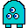

Blaster Boi
 Blaster Boi is one of those games that just feels surreal to me, like it truly doesn't exist. But, as of 5/25/2021 I have recovered it and can now publish it and properly archive it. I made Blaster Boi out of the desire to make a game in pure C#, no pre-made game engine, nothing. I wanted to see what it was like to create something on a lower level. It's always been a desire of mine to forgo game engines entirely and just make what I need to myself, so I channeled those desires into Blaster Boi.
In this game, you use w,a,s, and d to move around the screen, you can press and hold shift to sprint, and click the mouse to shoot. Shooting and sprinting will use up a limited pool of energy, which will recharge over time. You must defend yourself from various enemies that increase in difficulty and number as time goes on.
Blaster Boi was a milestone for me, not only because it was pure C#, but because it was the first program I wrote competent AI for. In the game there are a few different kinds of enemies, Maws, Gazers, Psychics, and Big Brains, each with their own AI. Maws were by far the simplest, they move toward the player, that's it. Truly, that is the most basic "AI" can get. Gazers were a small step up, they'd move toward the player and shoot a small bullet at them periodically. Psychics will keep their distance from the player while shooting rapid fire bolts of energy. After a few seconds they will stop and fire a low-accuracy spray of particles at the player. Big Brains are my personal favorite, they will teleport around the screen while firing waves of energy toward the player, teleport to a spot and reflect nearby projectiles shot by the player for a short period, and finally they will spawn a Brainling. Brainlings will erratically move toward the player and explode into 8 bullets when killed or when they get close enough to the player.
You can download and play the game here:
Download Zip (58KB)Contact Me At:
michaelapbarneswork@gmail.com